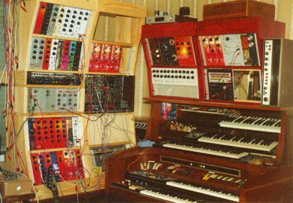

|

The synth as it is at the moment. Not a lot has happened since the last photo. I've worked the 100m into the rack. The patch bay and echo are now embedded in the left bank, allowing me to match the heights of the two banks. The Wurlitzer is gone, and the Hohnerola sits in its place, though that is not visible in this photo. The ASM-1 has gained a couple more face plates, though a shortage of 100k pots here (in my house, not in Australia) has stalled that for the moment.
Article, art & design copyright 2000 by Ken Stone
Modular Synth Home Disclaimer
|